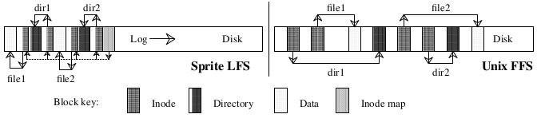
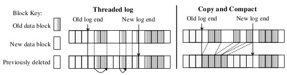

The Design and Implementation of a Log-Structured File System
Table of Contents
DECLARATION
This page is The Design and Implementation of a Log-Structured File System paper. Original Paper Link is: https://people.eecs.berkeley.edu/~brewer/cs262/LFS.pdf
The Design and Implementation of a Log-Structured File System
Mendel Rosenblum and John K. Ousterhout
Electrical Engineering and Computer Sciences, Computer Science Division
University of California
Berkeley, CA 94720
mendel@sprite.berkeley.edu, ouster@sprite.berkeley.edu
The work described here was supported in part by the National Science Foundation under grant CCR-8900029, and in part by the National Aeronautics and Space Administration and the Defense Advanced Research Projects Agency under contract NAG2-591.
This paper will appear in the Proceedings of the 13th ACM Symposium on Operating Systems Principles and the February 1992 ACM Transactions on Computer Systems.
July 24, 1991
Abstract
This paper presents a new technique for disk storage management called a log-structured file system. A log-structured file system writes all modifications to disk sequentially in a log-like structure, thereby speeding up both file writing and crash recovery. The log is the only structure on disk; it contains indexing information so that files can be read back from the log efficiently. In order to maintain large free areas on disk for fast writing, we divide the log into segments and use a segment cleaner to compress the live information from heavily fragmented segments. We present a series of simulations that demonstrate the efficiency of a simple cleaning policy based on cost and benefit. We have implemented a prototype log-structured file system called Sprite LFS; it outperforms current Unix file systems by an order of magnitude for small-file writes while matching or exceeding Unix performance for reads and large writes. Even when the overhead for cleaning is included, Sprite LFS can use 70% of the disk bandwidth for writing, whereas Unix file systems typically can use only 5-10%.
1 Introduction
Over the last decade CPU speeds have increased dramatically while disk access times have only improved slowly. This trend is likely to continue in the future and it will cause more and more applications to become disk-bound. To lessen the impact of this problem, we have devised a new disk storage management technique called a log-structured file system, which uses disks an order of magnitude more efficiently than current file systems.
Log-structured file systems are based on the assumption that files are cached in main memory and that increasing memory sizes will make the caches more and more effective at satisfying read requests[1]. As a result, disk traffic will become dominated by writes. A log-structured file system writes all new information to disk in a sequential structure called the log. This approach increases write performance dramatically by eliminating almost all seeks. The sequential nature of the log also permits much faster crash recovery: current Unix file systems typically must scan the entire disk to restore consistency after a crash, but a log-structured file system need only examine the most recent portion of the log.
The notion of logging is not new, and a number of recent file systems have incorporated a log as an auxiliary structure to speed up writes and crash recovery[2, 3]. However, these other systems use the log only for temporary storage; the permanent home for information is in a traditional random-access storage structure on disk. In contrast, a log-structured file system stores data permanently in the log: there is no other structure on disk. The log contains indexing information so that files can be read back with efficiency comparable to current file systems.
For a log-structured file system to operate efficiently, it must ensure that there are always large extents of free space available for writing new data. This is the most difficult challenge in the design of a log-structured file system. In this paper we present a solution based on large extents called segments, where a segment cleaner process continually regenerates empty segments by compressing the live data from heavily fragmented segments. We used a simulator to explore different cleaning policies and discovered a simple but effective algorithm based on cost and benefit: it segregates older, more slowly changing data from young rapidly-changing data and treats them differently during cleaning.
We have constructed a prototype log-structured file system called Sprite LFS, which is now in production use as part of the Sprite network operating system[4]. Benchmark programs demonstrate that the raw writing speed of Sprite LFS is more than an order of magnitude greater than that of Unix for small files. Even for other workloads, such as those including reads and large-file accesses, Sprite LFS is at least as fast as Unix in all cases but one (files read sequentially after being written randomly). We also measured the long-term overhead for cleaning in the production system. Overall, Sprite LFS permits about 65-75% of a disk's raw bandwidth to be used for writing new data (the rest is used for cleaning). For comparison, Unix systems can only utilize 5-10% of a disk's raw bandwidth for writing new data; the rest of the time is spent seeking.
The remainder of this paper is organized into six sections. Section 2 reviews the issues in designing file systems for computers of the 1990's. Section 3 discusses the design alternatives for a log-structured file system and derives the structure of Sprite LFS, with particular focus on the cleaning mechanism. Section 4 describes the crash recovery system for Sprite LFS. Section 5 evaluates Sprite LFS using benchmark programs and long-term measurements of cleaning overhead. Section 6 compares Sprite LFS to other file systems, and Section 7 concludes.
2 Design for file systems of the 1990's
File system design is governed by two general forces: technology, which provides a set of basic building blocks, and workload, which determines a set of operations that must be carried out efficiently. This section summarizes technology changes that are underway and describes their impact on file system design. It also describes the workloads that influenced the design of Sprite LFS and shows how current file systems are ill-equipped to deal with the workloads and technology changes.
2.1 Technology
Three components of technology are particularly significant for file system design: processors, disks, and main memory. Processors are significant because their speed is increasing at a nearly exponential rate, and the improvements seem likely to continue through much of the 1990's. This puts pressure on all the other elements of the computer system to speed up as well, so that the system doesn't become unbalanced.
Disk technology is also improving rapidly, but the improvements have been primarily in the areas of cost and capacity rather than performance. There are two components of disk performance: transfer bandwidth and access time. Although both of these factors are improving, the rate of improvement is much slower than for CPU speed. Disk transfer bandwidth can be improved substantially with the use of disk arrays and parallel-head disks[5] but no major improvements seem likely for access time (it is determined by mechanical motions that are hard to improve). If an application causes a sequence of small disk transfers separated by seeks, then the application is not likely to experience much speedup over the next ten years, even with faster processors.
The third component of technology is main memory, which is increasing in size at an exponential rate. Modern file systems cache recently-used file data in main memory, and larger main memories make larger file caches possible. This has two effects on file system behavior. First, larger file caches alter the workload presented to the disk by absorbing a greater fraction of the read requests[1, 6]. Most write requests must eventually be reflected on disk for safety, so disk traffic (and disk performance) will become more and more dominated by writes.
The second impact of large file caches is that they can serve as write buffers where large numbers of modified blocks can be collected before writing any of them to disk. Buffering may make it possible to write the blocks more efficiently, for example by writing them all in a single sequential transfer with only one seek. Of course, write-buffering has the disadvantage of increasing the amount of data lost during a crash. For this paper we will assume that crashes are infrequent and that it is acceptable to lose a few seconds or minutes of work in each crash; for applications that require better crash recovery, non-volatile RAM may be used for the write buffer.
2.2 Workloads
Several different file system workloads are common in computer applications. One of the most difficult workloads for file system designs to handle efficiently is found in office and engineering environments. Office and engineering applications tend to be dominated by accesses to small files; several studies have measured mean file sizes of only a few kilobytes[1, 6-8]. Small files usually result in small random disk I/Os, and the creation and deletion times for such files are often dominated by updates to file system "metadata" (the data structures used to locate the attributes and blocks of the file).
Workloads dominated by sequential accesses to large files, such as those found in supercomputing environments, also pose interesting problems, but not for file system software. A number of techniques exist for ensuring that such files are laid out sequentially on disk, so I/O performance tends to be limited by the bandwidth of the I/O and memory subsystems rather than the file allocation policies. In designing a log-structured file system we decided to focus on the efficiency of small-file accesses, and leave it to hardware designers to improve bandwidth for large-file accesses. Fortunately, the techniques used in Sprite LFS work well for large files as well as small ones.
2.3 Problems with existing file systems
Current file systems suffer from two general problems that make it hard for them to cope with the technologies and workloads of the 1990's. First, they spread information around the disk in a way that causes too many small accesses. For example, the Berkeley Unix fast file system (Unix FFS)[9] is quite effective at laying out each file sequentially on disk, but it physically separates different files. Furthermore, the attributes ("inode") for a file are separate from the file's contents, as is the directory entry containing the file's name. It takes at least five separate disk I/Os, each preceded by a seek, to create a new file in Unix FFS: two different accesses to the file's attributes plus one access each for the file's data, the directory's data, and the directory's attributes. When writing small files in such a system, less than 5% of the disk's potential bandwidth is used for new data; the rest of the time is spent seeking.
The second problem with current file systems is that they tend to write synchronously: the application must wait for the write to complete, rather than continuing while the write is handled in the background. For example even though Unix FFS writes file data blocks asynchronously, file system metadata structures such as directories and inodes are written synchronously. For workloads with many small files, the disk traffic is dominated by the synchronous metadata writes. Synchronous writes couple the application's performance to that of the disk and make it hard for the application to benefit from faster CPUs. They also defeat the potential use of the file cache as a write buffer. Unfortunately, network file systems like NFS[10] have introduced additional synchronous behavior where it didn't used to exist. This has simplified crash recovery, but it has reduced write performance.
Throughout this paper we use the Berkeley Unix fast file system (Unix FFS) as an example of current file system design and compare it to log-structured file systems. The Unix FFS design is used because it is well documented in the literature and used in several popular Unix operating systems. The problems presented in this section are not unique to Unix FFS and can be found in most other file systems.
3 Log-structured file systems
The fundamental idea of a log-structured file system is to improve write performance by buffering a sequence of file system changes in the file cache and then writing all the changes to disk sequentially in a single disk write operation. The information written to disk in the write operation includes file data blocks, attributes, index blocks, directories, and almost all the other information used to manage the file system. For workloads that contain many small files, a log-structured file system converts the many small synchronous random writes of traditional file systems into large asynchronous sequential transfers that can utilize nearly 100% of the raw disk bandwidth.
Although the basic idea of a log-structured file system is simple, there are two key issues that must be resolved to achieve the potential benefits of the logging approach. The first issue is how to retrieve information from the log; this is the subject of Section 3.1 below. The second issue is how to manage the free space on disk so that large extents of free space are always available for writing new data. This is a much more difficult issue; it is the topic of Sections 3.2-3.6. Table 1 contains a summary of the on-disk data structures used by Sprite LFS to solve the above problems; the data structures are discussed in detail in later sections of the paper.
| Data Structure | Purpose | Location | Section |
|---|---|---|---|
| Inode | Locates blocks of file, holds protection bits, modify time, etc. | Log | 3.1 |
| Inode map | Locates position of inode in log, holds time of last access plus version number. | Log | 3.1 |
| Indirect block | Locates blocks of large files. | Log | 3.1 |
| Segment summary | Identifies contents of segment (file number and offset for each block). | Log | 3.2 |
| Segment usage table | Counts live bytes still left in segments, stores last write time for data in segments. | Log | 3.6 |
| Superblock | Holds static configuration information such as number of segments and segment size. | Fixed | None |
| Checkpoint region | Locates blocks of inode map and segment usage table, identifies last checkpoint in log. | Fixed | None |
For each data structure the table indicates the purpose served by the data structure in Sprite LFS. The table also indicates whether the data structure is stored in the log or at a fixed position on disk and where in the paper the data structure is discussed in detail. Inodes, indirect blocks, and superblocks are similar to the Unix FFS data structures with the same names. Note that Sprite LFS contains neither a bitmap nor a free list.
3.1 File location and reading
Although the term "log-structured" might suggest that sequential scans are required to retrieve information from the log, this is not the case in Sprite LFS. Our goal was to match or exceed the read performance of Unix FFS. To accomplish this goal, Sprite LFS outputs index structures in the log to permit random-access retrievals. The basic structures used by Sprite LFS are identical to those used in Unix FFS: for each file there exists a data structure called an inode, which contains the file's attributes (type, owner, permissions, etc.) plus the disk addresses of the first ten blocks of the file; for files larger than ten blocks, the inode also contains the disk addresses of one or more indirect blocks, each of which contains the addresses of more data or indirect blocks. Once a file's inode has been found, the number of disk I/Os required to read the file is identical in Sprite LFS and Unix FFS.
In Unix FFS each inode is at a fixed location on disk; given the identifying number for a file, a simple calculation yields the disk address of the file's inode. In contrast, Sprite LFS doesn't place inodes at fixed positions; they are written to the log. Sprite LFS uses a data structure called an inode map to maintain the current location of each inode. Given the identifying number for a file, the inode map must be indexed to determine the disk address of the inode. The inode map is divided into blocks that are written to the log; a fixed checkpoint region on each disk identifies the locations of all the inode map blocks. Fortunately, inode maps are compact enough to keep the active portions cached in main memory: inode map lookups rarely require disk accesses.
Figure 1 shows the disk layouts that would occur in Sprite LFS and Unix FFS after creating two new files in different directories. Although the two layouts have the same logical structure, the log-structured file system produces a much more compact arrangement. As a result, the write performance of Sprite LFS is much better than Unix FFS, while its read performance is just as good.
 This example shows the modified disk blocks written by Sprite LFS and Unix FFS when creating two single-block files named dir1/file1 and dir2/file2. Each system must write new data blocks and inodes for file1 and file2, plus new data blocks and inodes for the containing directories. Unix FFS requires ten non-sequential writes for the new information (the inodes for the new files are each written twice to ease recovery from crashes), while Sprite LFS performs the operations in a single large write. The same number of disk accesses will be required to read the files in the two systems. Sprite LFS also writes out new inode map blocks to record the new inode locations.
3.2 Free space management: segments
The most difficult design issue for log-structured file systems is the management of free space. The goal is to maintain large free extents for writing new data. Initially all the free space is in a single extent on disk, but by the time the log reaches the end of the disk the free space will have been fragmented into many small extents corresponding to the files that were deleted or overwritten.
From this point on, the file system has two choices: threading and copying. These are illustrated in Figure 2. The first alternative is to leave the live data in place and thread the log through the free extents. Unfortunately, threading will cause the free space to become severely fragmented, so that large contiguous writes won't be possible and a log-structured file system will be no faster than traditional file systems. The second alternative is to copy live data out of the log in order to leave large free extents for writing. For this paper we will assume that the live data is written back in a compacted form at the head of the log; it could also be moved to another log-structured file system to form a hierarchy of logs, or it could be moved to some totally different file system or archive. The disadvantage of copying is its cost, particularly for long-lived files; in the simplest case where the log works circularly across the disk and live data is copied back into the log, all of the long-lived files will have to be copied in every pass of the log across the disk.
 In a log-structured file system, free space for the log can be generated either by copying the old blocks or by threading the log around the old blocks. The left side of the figure shows the threaded log approach where the log skips over the active blocks and overwrites blocks of files that have been deleted or overwritten. Pointers between the blocks of the log are maintained so that the log can be followed during crash recovery. The right side of the figure shows the copying scheme where log space is generated by reading the section of disk after the end of the log and rewriting the active blocks of that section along with the new data into the newly generated space.
Sprite LFS uses a combination of threading and copying. The disk is divided into large fixed-size extents called segments. Any given segment is always written sequentially from its beginning to its end, and all live data must be copied out of a segment before the segment can be rewritten. However, the log is threaded on a segment-by-segment basis; if the system can collect long-lived data together into segments, those segments can be skipped over so that the data doesn't have to be copied repeatedly. The segment size is chosen large enough that the transfer time to read or write a whole segment is much greater than the cost of a seek to the beginning of the segment. This allows whole-segment operations to run at nearly the full bandwidth of the disk, regardless of the order in which segments are accessed. Sprite LFS currently uses segment sizes of either 512 kilobytes or one megabyte.
3.3 Segment cleaning mechanism
The process of copying live data out of a segment is called segment cleaning. In Sprite LFS it is a simple three-step process: read a number of segments into memory, identify the live data, and write the live data back to a smaller number of clean segments. After this operation is complete, the segments that were read are marked as clean, and they can be used for new data or for additional cleaning.
As part of segment cleaning it must be possible to identify which blocks of each segment are live, so that they can be written out again. It must also be possible to identify the file to which each block belongs and the position of the block within the file; this information is needed in order to update the file's inode to point to the new location of the block. Sprite LFS solves both of these problems by writing a segment summary block as part of each segment. The summary block identifies each piece of information that is written in the segment; for example, for each file data block the summary block contains the file number and block number for the block. Segments can contain multiple segment summary blocks when more than one log write is needed to fill the segment. (Partial-segment writes occur when the number of dirty blocks buffered in the file cache is insufficient to fill a segment.) Segment summary blocks impose little overhead during writing, and they are useful during crash recovery (see Section 4) as well as during cleaning.
Sprite LFS also uses the segment summary information to distinguish live blocks from those that have been overwritten or deleted. Once a block's identity is known, its liveness can be determined by checking the file's inode or indirect block to see if the appropriate block pointer still refers to this block. If it does, then the block is live; if it doesn't, then the block is dead. Sprite LFS optimizes this check slightly by keeping a version number in the inode map entry for each file; the version number is incremented whenever the file is deleted or truncated to length zero. The version number combined with the inode number form an unique identifier (uid) for the contents of the file. The segment summary block records this uid for each block in the segment; if the uid of a block does not match the uid currently stored in the inode map when the segment is cleaned, the block can be discarded immediately without examining the file’s inode.
This approach to cleaning means that there is no free-block list or bitmap in Sprite. In addition to saving memory and disk space, the elimination of these data structures also simplifies crash recovery. If these data structures existed, additional code would be needed to log changes to the structures and restore consistency after crashes.
3.4 Segment cleaning policies
Given the basic mechanism described above, four policy issues must be addressed: (1) When should the segment cleaner execute? Some possible choices are for it to run continuously in background at low priority, or only at night, or only when disk space is nearly exhausted. (2) How many segments should it clean at a time? Seg- ment cleaning offers an opportunity to reorganize data on disk; the more segments cleaned at once, the more opportunities to rearrange. (3) Which segments should be cleaned? An obvious choice is the ones that are most fragmented, but this turns out not to be the best choice. (4) How should the live blocks be grouped when they are written out? One possibility is to try to enhance the locality of future reads, for example by grouping files in the same directory together into a single out- put segment. Another possibility is to sort the blocks by the time they were last modified and group blocks of similar age together into new segments; we call this approach age sort. July 24, 1991 - 5 - In our work so far we have not methodically addressed the first two of the above policies. Sprite LFS starts cleaning segments when the number of clean seg- ments drops below a threshold value (typically a few tens of segments). It cleans a few tens of segments at a time until the number of clean segments surpasses another thres- hold value (typically 50-100 clean segments). The overall performance of Sprite LFS does not seem to be very sensi- tive to the exact choice of the threshold values. In contrast, the third and fourth policy decisions are critically impor- tant: in our experience they are the primary factors that determine the performance of a log-structured file system. The remainder of Section 3 discusses our analysis of which segments to clean and how to group the live data. We use a term called write cost to compare cleaning policies. The write cost is the average amount of time the disk is busy per byte of new data written, including all the cleaning overheads. The write cost is expressed as a multi- ple of the time that would be required if there were no cleaning overhead and the data could be written at its full bandwidth with no seek time or rotational latency. A write cost of 1.0 is perfect: it would mean that new data could be written at the full disk bandwidth and there is no cleaning overhead. A write cost of 10 means that only one-tenth of the disk’s maximum bandwidth is actually used for writing new data; the rest of the disk time is spent in seeks, rota- tional latency, or cleaning. For a log-structured file system with large segments, seeks and rotational latency are negligible both for writing and for cleaning, so the write cost is the total number of bytes moved to and from the disk divided by the number of those bytes that represent new data. This cost is deter- mined by the utilization (the fraction of data still live) in the segments that are cleaned. In the steady state, the cleaner must generate one clean segment for every segment of new data written. To do this, it reads N segments in their entirety and writes out N*u segments of live data (where u is the utilization of the segments and 0 ≤ u < 1). This creates N*(1−u) segments of contiguous free space for new data. Thus write cost = new data written total bytes read and written = new data written read segs + write live + write new (1) = N*(1−u) N + N*u + N*(1−u) = 1−u 2 In the above formula we made the conservative assumption that a segment must be read in its entirety to recover the live blocks; in practice it may be faster to read just the live blocks, particularly if the utilization is very low (we haven’t tried this in Sprite LFS). If a segment to be cleaned has no live blocks (u = 0) then it need not be read at all and the write cost is 1.0. Figure 3 graphs the write cost as a function of u. For reference, Unix FFS on small-file workloads utilizes at most 5-10% of the disk bandwidth, for a write cost of 10-20 (see [11] and Figure 8 in Section 5.1 for specific measurements). With logging, delayed writes, and disk request sorting this can probably be improved to about 25% of the bandwidth[12] or a write cost of 4. Figure 3 suggests that the segments cleaned must have a utilization of less than .8 in order for a log-structured file system to outper- form the current Unix FFS; the utilization must be less than